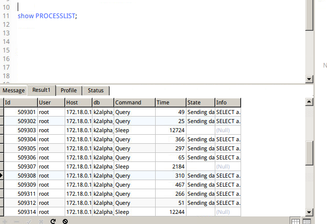
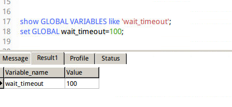
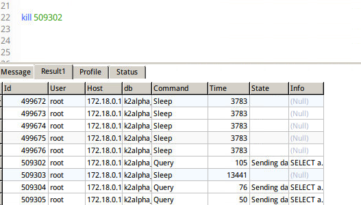
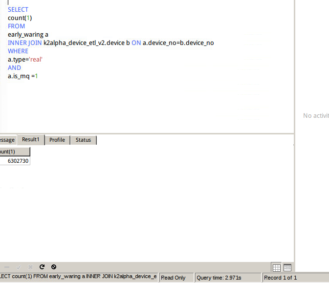

前提介绍
同样的mysql，同样的查询，为啥在不同的服务器上的查询效率差别有10几倍
继上一篇索引优化后，在自己的服务器上已经从10几秒优化到了2s，以为万事大吉了，
谁知道，同样的操作，在客户的服务器上优化后，还是比本机慢了10几倍
当然了，客户服务器上添加完索引后，相对之前已经快了不少，sql查询已经优化到了极点
为什么会比自己的服务器慢10几倍呢？
这让我开始怀疑客户服务器的内存使用
由于客户的mysql，当时我是使用docker镜像，所以一开始想到的解决方案是扩大docker容器的内存
但是后来一想，即使内存扩大了，保不住下次还会不够用，为啥一个小小的mysql能把内存占满了，
不行，必须从mysql上解决根本问题，而不是一位的扩大内存
于是，我开始了如下操作：
解决过程
查看docker容器的cpu占用情况
神马？这么高！！！
查询存在的连接数
在mysql 输入 show processlist ;查询存在的连接数以及timeout的时间，可以帮助识别出有问题的查询语句
发现有好多造成查询慢的语句
mysql> show processlist; //info只能查看前100字符
show full processlist; //查看所有info
select * from information_schema.PROCESSLIST t WHERE t.COMMAND in ‘Query’

修改wait_timeout
wait_timeout：mysql服务器关闭非交互连接之前等待活动的秒数。
wait_timeout过大有弊端，MySQL里大量的SLEEP连接无法及时释放，拖累系统性能；
设置过小，可能会遇到“MySQL has gone away”之类的报错
Linux系统中，默认是28800秒，可设置最小值1，最大值31536000
此处我们设置100

设置完之后查看cpu占用率（设置完之后不确定会不会马上降低）
但是cpu占用率确实降 了一半
kill锁表语句与慢sql
研究了一下，怎么kill掉慢的sql语句1 单个kill
mysql> show processlist;
mysql > kill 251;
2 批量kill
2.1查找Lockd语句
mysql -uroot -p123456 -h 192.1.20.101 -e “show processlist” | grep -i ‘Locked’ > locked_log.txt
2.2 组合kill
for line incat locked_log.txt | awk '{print $1}'
do
echo “kill $line;” >> kill_thread_id.sql
done
3)执行
mysql>source kill_thread_id.sq

kill完成后，再次查看cpu占用率
再次执行查询语句，发现已经可以降低到2s左右
